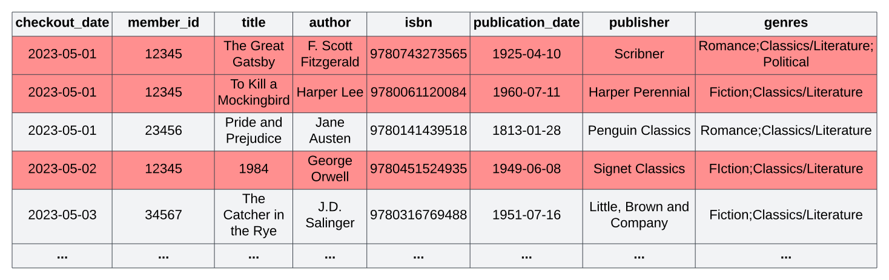

Working with privacy IDs#
In previous tutorials, we were working with a table where each person in the data was associated with exactly one row. But this is not always the case: in some datasets, the same person can appears in many rows. In this case, it is common to associate each person with an identifier. Then, the goal becomes to hide whether all rows that share a given identifier are present in the data.
Tumult Analytics refers to these identifiers as privacy IDs: an identifier that maps one-to-one to a person, or more generally to an entity we want to protect.
In this tutorial, we will have a table containing information on books checked out from the library. Each row says which book was checked out and by whom. Since we want to protect the privacy of library users, we will use the member ID on each checkout as our privacy ID. We will then use this data to determine which books at the library are the most popular, and how many people have checked out those books.
Setup#
We import Python packages…
from pyspark import SparkFiles
from pyspark.sql import SparkSession
from tmlt.analytics import (
AddRowsWithID,
MaxGroupsPerID,
MaxRowsPerGroupPerID,
MaxRowsPerID,
KeySet,
PureDPBudget,
QueryBuilder,
Session,
)
… and download two datasets: one containing books checked out from the library, and one that contains a list of the books that the library has. The checkout logs might look like:

Notice that the same member may have checked out many books, as illustrated by the highlighted rows. This is a defining characteristic of data fit for use with privacy IDs, as we will see in a moment.
spark = SparkSession.builder.getOrCreate()
spark.sparkContext.addFile(
"https://media.githubusercontent.com/media/opendp/tumult-demo-data/refs/heads/main/checkout-logs.csv"
)
spark.sparkContext.addFile(
"https://raw.githubusercontent.com/opendp/tumult-demo-data/refs/heads/main/library_books.csv"
)
checkouts_df = spark.read.csv(
SparkFiles.get("checkout-logs.csv"), header=True, inferSchema=True
)
books_df = spark.read.csv(
SparkFiles.get("library_books.csv"), header=True, inferSchema=True
)
Creating a Session with privacy IDs#
Let’s initialize our Session with a
private dataframe containing books checked out from the library.
Since each library member could have checked out any number of books,
we will use the AddRowsWithID
protected change. This protected change will protect adding and removing
arbitrarily many rows all sharing the same ID.
budget = PureDPBudget(epsilon=float('inf'))
session = Session.from_dataframe(
budget,
"checkouts",
checkouts_df,
protected_change=AddRowsWithID(id_column="member_id"),
)
Initializing our Session like this protects members of our library, regardless of how many books they’ve checked out. Let’s take a look at our Session:
session.describe()
The session has a remaining privacy budget of PureDPBudget(epsilon=inf).
The following private tables are available:
Table 'checkouts' (no constraints):
Column Name Column Type ID Col ID Space Nullable
---------------- ------------- -------- ---------------- ----------
checkout_date TIMESTAMP False True
member_id INTEGER True default_id_space True
title VARCHAR False True
author VARCHAR False True
isbn VARCHAR False True
publication_date INTEGER False True
publisher VARCHAR False True
genres VARCHAR False True
We can see that our Session has a single table, checkouts, with 7 columns, and that
the ‘member_id’ column is marked as our ID column.
A simple query with privacy IDs#
Let’s find out what the most popular books in our library are! We can do this by counting how many times each book has been checked out.
This sounds like a simple query combining a group-by operation and a count; we know how to perform those. But if we try to evaluate this query on our data, we will get an error:
keyset = KeySet.from_dataframe(
books_df.select("title", "author", "isbn")
)
count_query = (
QueryBuilder("checkouts")
.groupby(keyset)
.count()
)
result = session.evaluate(count_query, PureDPBudget(1))
RuntimeError: A constraint on the number of rows contributed by each ID
is needed to perform this query (e.g. MaxRowsPerID).
This error occurs because there is no limit to how many rows a single person could contribute to the data: a single library member could borrow 10000 books or even more! But differential privacy needs to hide the impact of a single person behind statistical noise… and as we saw with clamping bounds, this is impossible if this impact can be arbitrarily large!
To solve this problem, before performing aggregations, we need to limit the
maximum impact that a single library patron can have on the statistic we want
to compute. This is done by enforcing a constraint on the data. The simplest
constraint, MaxRowsPerID,
limits the total number of rows contributed by each privacy ID. To enforce
it, we simply pass it as parameter to the
enforce() operation.
For this query, we will limit the maximum number of contributed rows to 20
per library member.
keyset = KeySet.from_dataframe(
books_df.select("title", "author", "isbn"),
)
count_query = (QueryBuilder("checkouts")
.enforce(MaxRowsPerID(20))
.groupby(keyset)
.count()
)
result = session.evaluate(count_query, PureDPBudget(1))
top_five = result.sort("count", ascending=False).limit(5)
top_five.show()
+--------------------+--------------------+----------+-----+
| title| author| isbn|count|
+--------------------+--------------------+----------+-----+
|Comfort Me with A...| Ruth Reichl|0375758739| 3787|
| The Alchemist|Paulo Coelho/Alan...|0061122416| 2441|
|The Devil in the ...|Erik Larson/Tony ...|0739303406| 2249|
| Eat Pray Love| Elizabeth Gilbert|0143038419| 2071|
|The Tipping Point...| Malcolm Gladwell|0316346624| 1884|
+--------------------+--------------------+----------+-----+
With this additional step limiting the maximum contribution of each privacy ID, we are now able to run the query and find the five most popular books. This step is also called truncation: we dropped (or truncated) some of the data to enforce the desired constraint.
More constraints#
Limiting the number of rows per privacy ID is not the only way to truncate the data and perform queries with privacy IDs. Another option is to limit the number of groups that each ID can appear in, and limit the number of rows per group that a single privacy ID can contribute. Let’s see an example by computing how many patrons have checked out each of our top five books.
For this query, we will combine two constraints to truncate our data:
MaxGroupsPerID: limiting the number of groups (here, distinct books) that any library patron can contribute to; andMaxRowsPerGroupPerID: limiting the number of rows that any library patron can provide for each group.
We will limit each patron to 5 groups (we only consider the 5 most popular books) and have patrons only appear once per group (we don’t want to count the same patron twice for the same book).
Then, we will create a keyset from our top 5 books and perform a count query:
top_five_keyset = KeySet.from_dataframe(
top_five.select("title", "author", "isbn"),
)
count_distinct_query = (
QueryBuilder("checkouts")
.enforce(MaxGroupsPerID("isbn", 5))
.enforce(MaxRowsPerGroupPerID("isbn", 1))
.groupby(top_five_keyset)
.count()
)
result = session.evaluate(count_distinct_query, PureDPBudget(1.5))
result.show()
+--------------------+--------------------+----------+-----+
| title| author| isbn|count|
+--------------------+--------------------+----------+-----+
|Comfort Me with A...| Ruth Reichl|0375758739| 481|
| Eat Pray Love| Elizabeth Gilbert|0143038419| 658|
| The Alchemist|Paulo Coelho/Alan...|0061122416| 777|
|The Devil in the ...|Erik Larson/Tony ...|0739303406| 657|
|The Tipping Point...| Malcolm Gladwell|0316346624| 549|
+--------------------+--------------------+----------+-----+
We could also express this query using
count_distinct(): limiting each
ID to a single row per library member (per ISBN) is the same as counting
distinct IDs.
top_five_keyset = KeySet.from_dataframe(top_five.select("isbn"))
count_distinct_query = (
QueryBuilder("checkouts")
.enforce(MaxGroupsPerID("isbn", 5))
.groupby(top_five_keyset)
.count_distinct(["member_id"], name="count")
)
result = session.evaluate(
count_distinct_query, PureDPBudget(1.5)
).join( # Add title/author back to result
top_five.select("title", "author", "isbn"), on=["isbn"], how="left"
).select( # Reorder dataframe columns
"title", "author", "isbn", "count"
)
When using count_distinct() on the ID column, we no longer need to specify the MaxRowsPerGroupPerID constraint:
Tumult Analytics understands that each ID can contribute at most once per group.
We can then display the results as a graph:
import matplotlib.pyplot as plt
import seaborn as sns
sns.set_theme(style="whitegrid")
data_to_plot = result.toPandas().sort_values("count", ascending=False)
def shorten_title(row):
if len(row["title"]) < 15:
return row["title"]
return row["title"][:12] + "..."
data_to_plot["short_title"] = data_to_plot.apply(
lambda row: shorten_title(row), axis=1
)
g = sns.barplot(x="title", y="count", data=data_to_plot, color="#1f77b4")
g.set_xticklabels(
data_to_plot["short_title"], rotation=45, horizontalalignment="right"
)
plt.title("How many members have checked out popular books")
plt.xlabel("Book Title")
plt.ylabel("Members")
plt.tight_layout()
plt.show()

Summary#
We’ve seen that when using privacy IDs, we need to truncate the data to limit
how much each privacy ID can contribute to the final statistic. There are two
ways of doing so: using MaxRowsPerID,
or using MaxGroupsPerID and
MaxRowsPerGroupPerID.
![A flow chart showing three paths from "data with privacy IDs" to "compute statistic". The first path is "data with privacy IDs" to "truncate using MaxRowsPerID" to "compute statistic". The second and third paths are paired together. The second path is "data with privacy IDs" to "truncate using MaxGroupsPerID" to "truncate using MaxRowsPerGroupPerID" to "compute statistic". The third path is "data with privacy IDs" to "truncate using MaxRowsPerGroupPerID" to "truncate using MaxGroupsPerID" to "compute statistic".](../_images/flow_chart_truncation.svg)
As a reminder:
MaxRowsPerIDlimits the number of rows associated with each privacy ID in a table.MaxGroupsPerIDlimits the number of distinct values of the grouping column that may appear for each privacy ID in a table.MaxRowsPerGroupPerIDlimits the number of rows associated with each (privacy ID, grouping column value) pair in a table.
To understand the impact of the various constraints in more detail, you can consult our topic guide about sensitivity. To learn more about how to perform more complex queries on tables initialized with privacy IDs, you can proceed to the next tutorial.